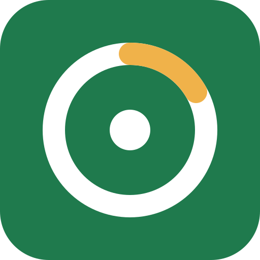

Iron Log
En snabb, gratis näringsdagbok med öppen källkod. Logga maten och se energi, makron och vitaminer, mineraler och fettsyror mot de nordiska näringsrekommendationerna (NNR 2023).
Öppna Iron LogFungerar i webbläsaren och kan installeras som app. Funkar offline.
Installera på mobilen
iPhone
- Öppna quoterg.github.io/iron-log i Safari (eller Chrome).
- Tryck på Dela (□↑) och välj Lägg till på hemskärmen.
Android
Enklast: öppna appen i Chrome, tryck på ⋮ och välj Installera app. Eller ladda ner Android-appen:
Ladda bara ner appen härifrån. Android varnar (”Play Protect”) eftersom appen inte finns i Play Butik – tryck på Mer information → Installera ändå, och stäng av ”Installera okända appar” för webbläsaren igen efteråt. Appen kräver Android 7 eller senare och visar samma Iron Log som webben, så den uppdateras av sig själv. Signeringscertifikatets SHA-256: F9:FF:C7:18:F1:E9:E9:F7:C2:F0:94:53:ED:8E:FB:D5:7C:39:F3:DF:C5:6A:1E:D2:E8:0C:0B:E0:19:23:DC:4F
Svensk mat först
Livsmedelsverkets databas med svenska namn och vanliga mått (dl, msk, st), plus USDA och Open Food Facts-streckkoder.
Dina data stannar hos dig
Inga konton, ingen spårning. Allt sparas på din enhet och kan exporteras eller raderas när du vill. Integritet
Snabb på äldre mobiler
Liten app med en strikt storleksbudget, sökning i en bakgrundstråd, och testad med strypt processor.
Mer än kalorier
Recept, egna livsmedel, kosttillskott, vikt och midjemått med trend, aktiviteter, vatten och rapporter över luckor och källor.
In English
Iron Log is a fast, free, open-source nutrition tracker. Log food and see energy, macros, vitamins, minerals and fatty acids against the Nordic Nutrition Recommendations (NNR 2023). It works in the browser, installs as an app and works offline. Open the app
Install: on iPhone, open the app in Safari → Share → Add to Home Screen. On Android, open it in Chrome → ⋮ → Install app, or download the Android app (APK) — only from this link; tap More details → Install anyway at the Play Protect warning (the app isn't on Google Play). Android 7+. Certificate SHA-256: F9:FF:C7:18:F1:E9:E9:F7:C2:F0:94:53:ED:8E:FB:D5:7C:39:F3:DF:C5:6A:1E:D2:E8:0C:0B:E0:19:23:DC:4F
- Swedish food first: the Swedish Food Agency database with household measures, plus USDA and Open Food Facts barcodes.
- Your data stays with you: no accounts, no tracking; export or delete any time. Privacy
- Fast on older phones: a strict size budget, search in a background thread, tested on a throttled CPU.
- More than calories: recipes, custom foods, supplements, weight and waist with a trend, activities, water, and reports on gaps and sources.
Öppen källkod (AGPL-3.0): github.com/Quoterg/iron-log · Livsmedelsdata: Livsmedelsverket (CC BY 4.0), USDA FoodData Central (CC0), Open Food Facts (ODbL).